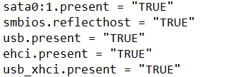

SEB Bypass Patch v3.3.2
By using this patch, you can use a Windows Virtual Machine [VMware Player] for SEB and use your usual desktop for searching answers for the questions asked in the exams conducted in SEB without them knowing 😉
How to use
1․ Download SafeExamBrowser.Monitoring.dll and SafeExamBrowser.SystemComponents.dll by clicking these.
2․ Copy these two files.
3․ Go to C:\Program Files\SafeExamBrowser\Application.
4․ Paste it in this folder.
5․ You’ll need admin perms to replace files in this folder.
6․ After replacing, open SEB and voila it runs in a VM.
Recommended
It’s recommended to use VMware(Free/Paid) since we can make the VM look like a real computer by copying the host computer’s (the computer in which VM is running) model and company.
Steps to do this:
1․ First go to the directory where you installed the Windows VM. Its the Documents folder by default.
2․ In Documents folder, there will be a folder called Virtual Machines.
3․ Open that folder and select the Windows VM folder and open it.
4․ Now there will be a file with extension .vmx. Right click that file and open with Notepad.
5․ Now paste smbios.reflecthost = "TRUE" in a new line like this:

It doesn’t matter where this is pasted. Just paste it in a new line.
6․ Now save the file and voila! Your VM manufacturer and model is similar as your PC. This reduces the chance of VM detection.
DON’T FORGET
Don’t forget to edit logs if your exam invigilator asks you for your Client and Runtime logs.
Logs Path: C:\Users\<username>\AppData\Local\SafeExamBrowser and put your user name in place of <username>
Just edit these parts:
-
In Runtime.log file,
INFO: [DisplayMonitor] Detected 0 active displays, 1 are allowed.
to
INFO: [DisplayMonitor] Detected 1 active displays, 1 are allowed.
-
In Client.log file,
INFO: [WirelessAdapter] Wireless networks cannot be monitored, as there is no hardware adapter available or it is turned off.
to
INFO: [WirelessAdapter] Started monitoring the wireless network adapter.
Follow these steps if you’re using v2.4 of SEB
These .dll files are absent in the legacy version i.e. v2.4 of SEB.
Basically this version of SEB doesn’t check if you’re using VM or not. So it’s pretty easy to use it.
But, if they ask for logs, you need to delete these lines from the log file[Logs Path: C:\Users\<username>\AppData\Roaming\SafeExamBrowser and put your user name in place of <username>]:
-
Open Sebclient.log
-
Now press Ctrl key and F key.
-
Now paste
vm3dservicethere and click find. -
Now delete the lines where this is shown.
-
Do the same for
VGAuthServiceandvmtoolsdand delete those lines. -
We did this to prevent the invigilators from detecting a VM since VMware tools run these services and if they see these services, you may get disqualified. Also this only works for VMware.